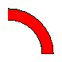
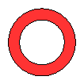

Sie können Kurven-/Polygonzüge mit einer Farbe/einem
(gefärbten) Muster füllen, indem Sie das jeweilige Objekt und
anschließend das gewünschte Füllsysmbol im Fenster Attribute
unterhalb des Reiters Füllung auswählen.
Es gibt die folgenden Füllmuster:
 keine Füllung
keine Füllung Füllung mit einer Farbe, die Sie aus den
unter
Füllung mit einer Farbe, die Sie aus den
unter Muster, HSB,
RGB, Vordefiniert angegebenen Farben
auswählen können. Füllung mit einer vertikalen Schraffur,
standardmäßig um 45 Grad gegen den Uhrzeigersinn gedreht.
Füllung mit einer vertikalen Schraffur,
standardmäßig um 45 Grad gegen den Uhrzeigersinn gedreht. Füllung mit einer
vertikalen Schraffur die Hintergrundfarbe können Sie aus den
unter
Füllung mit einer
vertikalen Schraffur die Hintergrundfarbe können Sie aus den
unter Muster,
HSB, RGB, Vordefiniert angegebenen
Farben auswählen. Füllung mit einer horizontalen Schraffur,
standardmäßig um 45 Grad gegen den Uhrzeigersinn gedreht.
Füllung mit einer horizontalen Schraffur,
standardmäßig um 45 Grad gegen den Uhrzeigersinn gedreht. Füllung mit
einer horizontalen Schraffur, die Hintergrundfarbe können Sie aus den
unter
Füllung mit
einer horizontalen Schraffur, die Hintergrundfarbe können Sie aus den
unter Muster,
HSB, RGB, Vordefiniert angegebenen
Farben auswählen. Füllung mit einer Schraffur
durch gekreuzte Linien, standardmäßig um 45 Grad gegen den
Uhrzeigersinn gedreht.
Füllung mit einer Schraffur
durch gekreuzte Linien, standardmäßig um 45 Grad gegen den
Uhrzeigersinn gedreht. Füllung mit einer
Schraffur durch gekreuzte Linien, die Hintergrundfarbe können Sie aus
den unter
Füllung mit einer
Schraffur durch gekreuzte Linien, die Hintergrundfarbe können Sie aus
den unter Muster,
HSB, RGB, Vordefiniert angegebenen
Farben auswählen.
Die folgenden Hinweise können beim Füllen hilfreich sein:
- Sie können auch einen offenen Polygonzug wie
füllen, das Ergebnis ist
- Ein Dreieck, das aus drei
Linien gebildet wird, ist kein
geschlossener Polygonzug, Sie können es daher nicht füllen. Sie
können es jedoch über den Eintrag
Ausgewählte Kurven zusammenfügen im zugehörigen
Kontextmenü in einen solchen geschlossenen Polygonzug
überführen und danach füllen.
- Einen Kreisringabschnitt  füllen Sie in
ähnlicher Weise: Sie zeichen die zugehörigen Kreisbögen,
wählen beide aus und führen Sie über den
Eintrag
Ausgewählte Kurven zusammenfügen im
zugehörigen Kontextmenü in einen Polygonzug über, diesen
füllen Sie dann wie beschrieben
- Einen Kreisring  füllen Sie, indem Sie zunächst den
äußeren Kreis mit der gewünschten Farbe füllen und
anschließend den inneren Kreis beispielsweise mit Weiß
füllen. Wenn sie in der umgekehrten Reihenfolge vorgehen, können
über die Einträge
vorwärts bzw.
rückwärts den gewünschten Effekt erzielen.